How to Close the Microsoft Sticky Notes App (Windows 11)
This tutorial covers:
How to Close the Notes List and Sticky Notes With Right Click
How to Close the Notes List:
How to Close a Sticky Note:
No time to scroll down? Click through this presentation tutorial:
Follow along with a tutorial video:
How to Close the Notes List and Sticky Notes With Right Click
- Step 1: First open the Sticky Notes app. Go down to the taskbar and right click the Sticky Notes app icon. 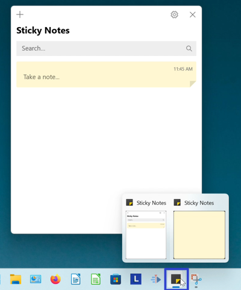
- Step 2: In the menu that opens, click “Close window” (if only one window is open) or “Close windows” (if multiple windows are open). 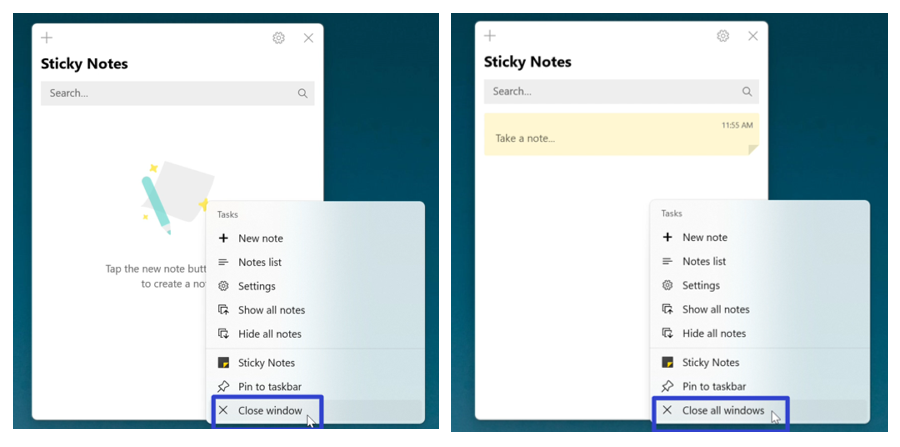
- Both the Notes List and all sticky notes close. 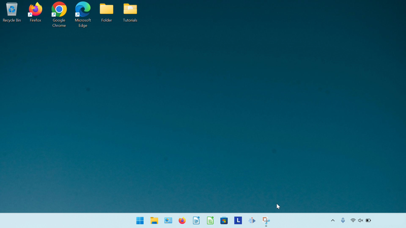
How to Close the Notes List With Click
- Step 1: Open the Notes List. Go to the upper right corner of the Notes List and click the “Close” or “X” button. The Notes List closes. 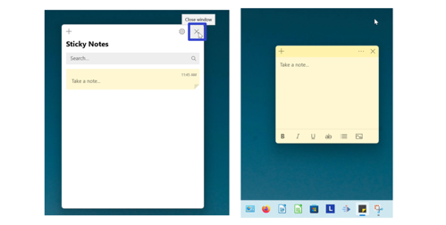
How to Close the Notes List With Hover
- Step 1: First open the Notes List. Go down to the taskbar and hover the mouse over the Sticky Notes app icon.

- Step 2: Two small windows appear (one is the Notes List and the other is the sticky note). Click the “Close” or “X” button in the upper right of the small Notes List window. The Notes List window closes. 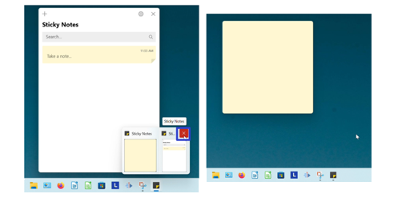
How to Close the Notes List With Menu
- Step 1: Open the Notes List. Go down to the taskbar and hover the mouse over the Sticky Notes app icon.
- Step 2: Two small windows appear (one is the Notes List and the other is the sticky note). Right click the small Notes List window. 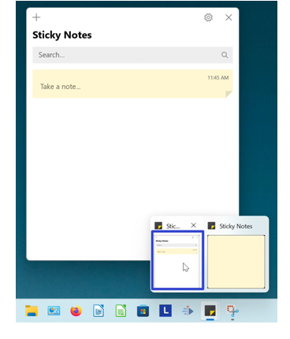
- Step 3: In the menu that opens, click “Close”. The Notes List window closes. 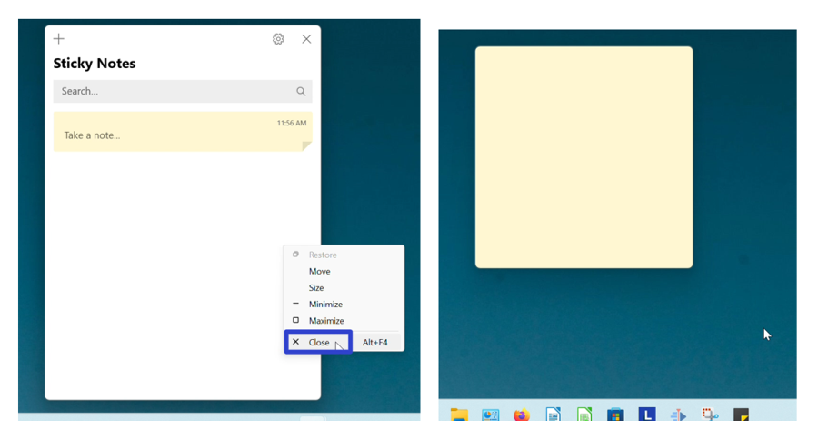
How to Close the Notes List With Keyboard Shortcuts
- Method 1: First open the Notes List. On the keyboard press Alt + F4. The Notes List closes. Note: Some computers accept this keyboard shortcut as Fn + Alt + F4. 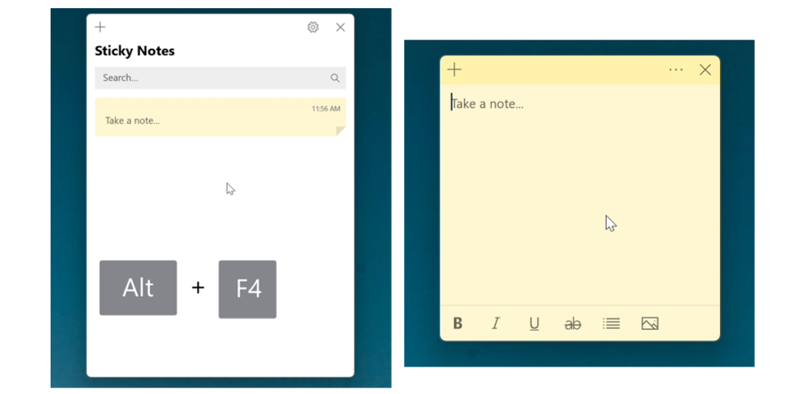
- Method 2: Open the Notes List. On the keyboard press Ctrl + W. The Notes List closes. 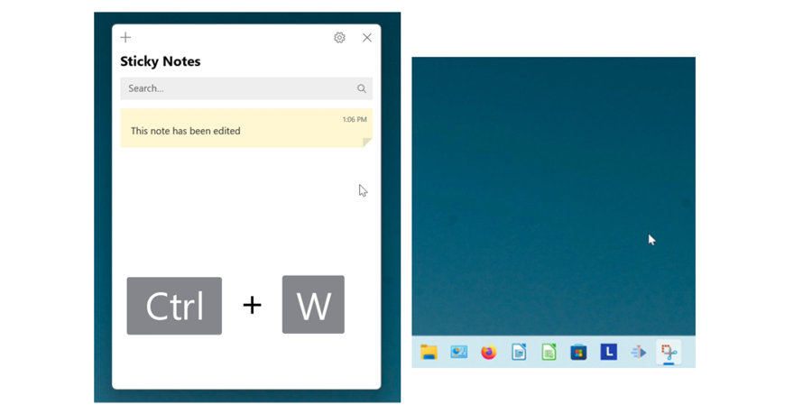
How to Close a Sticky Note With Click
- Step 1: First open a sticky note. Go to the upper right and click the “Close” or “X” button. The sticky note closes. 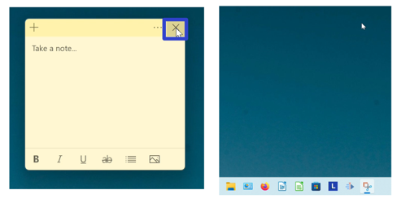
How to Close a Sticky Note With Hover
- Step 1: Open a sticky note. Go down to the taskbar and hover the mouse over the Sticky Notes app icon.
- Step 2: Two small windows appear (one is the Notes List and the other is the sticky note). Click the “Close” or “X” button in the upper right of the small sticky note window. The sticky note closes. 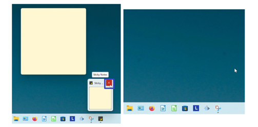
How to Close a Sticky Note With Menu
- Step 1: First open a sticky note. Go down to the taskbar and hover the mouse over the Sticky Notes app icon.
- Step 2: Two small windows appear (one is the Notes List and the other is the sticky note). Right click the small sticky note window. 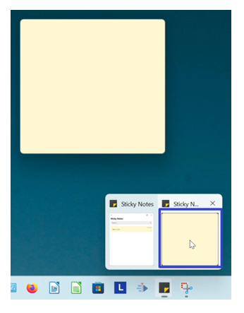
- Step 3: In the menu that opens, click “Close”. The sticky note closes. 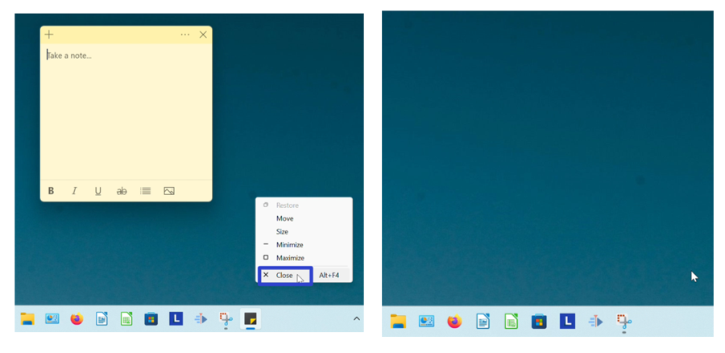
How to Close a Sticky Note With Keyboard Shortcut
- Method 1: Open a sticky note. On the keyboard press Alt + F4. The sticky note closes. Note: Some computers accept this shortcut as Fn + Alt + F4. 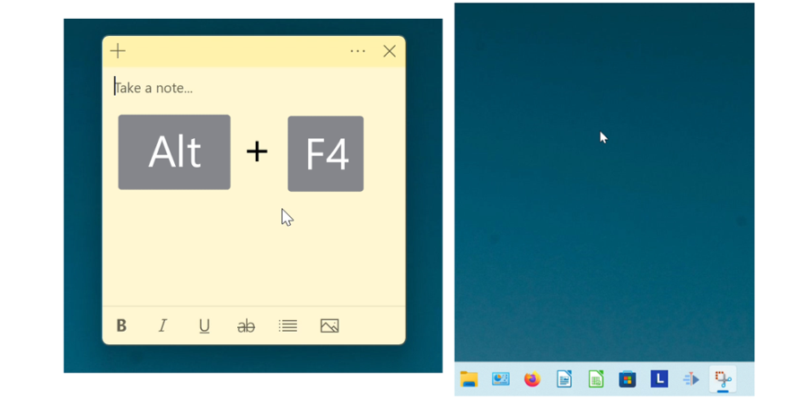
- Method 2: First open a sticky note. On the keyboard press Ctrl + W. This shortcut closes edited sticky notes, and deletes unedited sticky notes. 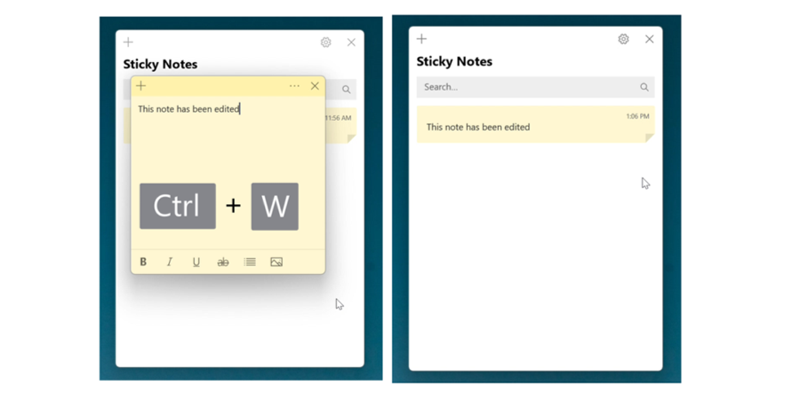
Save a copy of these instructions with this free PDF tutorial.